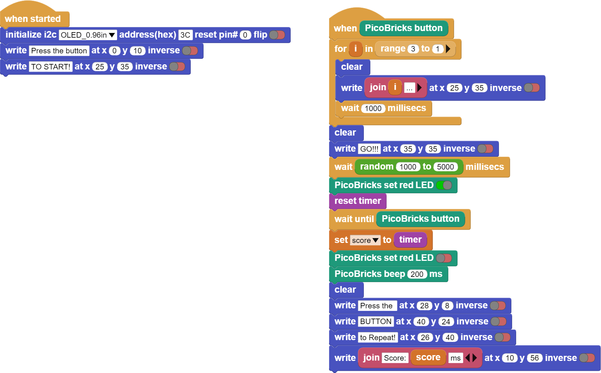

Show Your Reaction¶
Introduction¶
In this project you will learn about the randomness used in every programming language. With Picobricks, we will develop an electronic system using OLED display, Button-LED and Buzzer module. A timer starts running as soon as the Picobricks are turned on. With this timer, we can measure 1 thousandth of a second.
Project Details and Algorithm¶
Now we will prepare a game that develops attention and reflexes. Moving quickly and being able to provide attention for a long time are important developmental characteristics of children. Preschool and primary school children do activities that increase their attention span and reflexes, as they are liked by their parents and teachers. The electronic system we will prepare will be a game that increases attention and develops reflexes. After finishing the project, you can compete with your friends. :)
Timers are used in many electronic systems in daily life. Timed lighting, ovens, irons, food processors… When our project starts working, we will display a welcome message on the OLED screen. Then we will print on the screen what the user has to do to start the game. In order to start the game, we will ask the player to prepare by counting backwards from 3 on the screen after the button is pressed. After the end of the countdown, the red LED will turn on in a random time between 2-10 seconds. We will reset the timer immediately after the red LED lights up. We will measure the timer as soon as the button is pressed again. This value we get will be in milliseconds. We will display this value on the screen as the player’s reaction time.
Wiring Diagram¶
{kind=link}
{kind=link}
You can program and run Picobricks modules without any wiring. If you are going to use the modules by separating them from the board, then you should make the module connections with the Grove cables provided.
MicroPython Code of the Project¶
from machine import Pin, I2C,Timer
from picobricks import SSD1306_I2C
import utime
import urandom
#define the library
WIDTH=128
HEIGHT=64
#define the width and height values
sda=machine.Pin(4)
scl=machine.Pin(5)
i2c=machine.I2C(0,sda=sda, scl=scl, freq=2000000)
oled= SSD1306_I2C(WIDTH, HEIGHT, i2c)
button = Pin(10,Pin.IN,Pin.PULL_DOWN)
led=Pin(7,Pin.OUT)
#define our input and output pins
while True:
led.value(0)
oled.fill(0)
oled.text("press the button",0,10)
oled.text("TO START!",25,25)
oled.show()
#print "Press the button" and "TO START!" on the OLED screen
while button.value()==0:
pass
oled.fill(0)
oled.text("Wait For LED",15,30)
oled.show()
#write "wait for LED" on the screen when the button is pressed
utime.sleep(urandom.uniform(1,5))
led.value(1)
timer_start=utime.ticks_ms()
#wait for a rondom second and turn on the led
while button.value()==0:
pass
timer_reaction=utime.ticks_diff(utime.ticks_ms(), timer_start)
pressed=True
oled.fill(0)
oled.text("Your Time",25,25)
oled.text(str(timer_reaction),50,50)
oled.show()
led.value(0)
utime.sleep(1.5)
#print the score and "Your Time" to the screen when the button is pressed.
Truco
If you rename your code file to main.py, your code will run after every boot.
Arduino C Code of the Project¶
#include <Wire.h>
#include "ACROBOTIC_SSD1306.h"
//define the library
int buzzer=20;
int button=10;
int led=7;
int La=440;
int old_time=0;
int now_time=0;
int score=0;
String string_score;
//define our integer and string veriables
void setup() {
// put your setup code here, to run once:
Wire.begin();
oled.init();
oled.clearDisplay();
pinMode(led,OUTPUT);
pinMode(buzzer,OUTPUT);
pinMode(button,INPUT);
Serial.begin(9600);
//define the input and output pins
}
void loop() {
// put your main code here, to run repeatedly:
oled.setTextXY(3,0);
oled.putString("Press the button");
oled.setTextXY(5,4);
oled.putString("TO START");
if(digitalRead(button)==1){
for(int i=3; i>0; i--){
String string_i=String(i);
oled.clearDisplay();
oled.setTextXY(4,8);
oled.putString(string_i);
delay(1000);
}
//count backwards from three
oled.clearDisplay();
oled.setTextXY(4,6);
oled.putString("GO!!!");
//print "GO!!" on the OLED at x=4 y=6
int random_wait= random(1000, 5000);
delay(random_wait);
//wait for a random second between 1 and 5
digitalWrite(led, HIGH);
old_time=millis();
//turn on LED
while(!(digitalRead(button)==1)){
now_time=millis();
score=now_time-old_time;
string_score= String(score);
//save score as string on button press
}
digitalWrite(led, HIGH);
tone(buzzer, La);
delay(200);
noTone(buzzer);
//turn on LED and buzzer
oled.clearDisplay();
oled.setTextXY(1,4);
oled.putString("Press the");
//print "Press the" on the OLED at x=1 Y=4
oled.setTextXY(2,3);
oled.putString("RESET BUTTON");
//print "RESET BUTTON" on the OLED at X=1 Y=4
oled.setTextXY(3,3);
oled.putString("To Repeat!");
//print "To Repeat!" on the OLED at X=3 Y=3
oled.setTextXY(6,3);
oled.putString("Score: ");
oled.setTextXY(6,9);
oled.putString(string_score);
oled.setTextXY(6,13);
oled.putString(" ms");
Serial.println(score);
//print score value to screen
delay(10000);
oled.clearDisplay();
//wait ten seconds and clear the screen
}
}
Coding the Project with MicroBlocks¶
 |
Nota
To code with MicroBlocks, simply drag and drop the image above to the MicroBlocks Run tab.